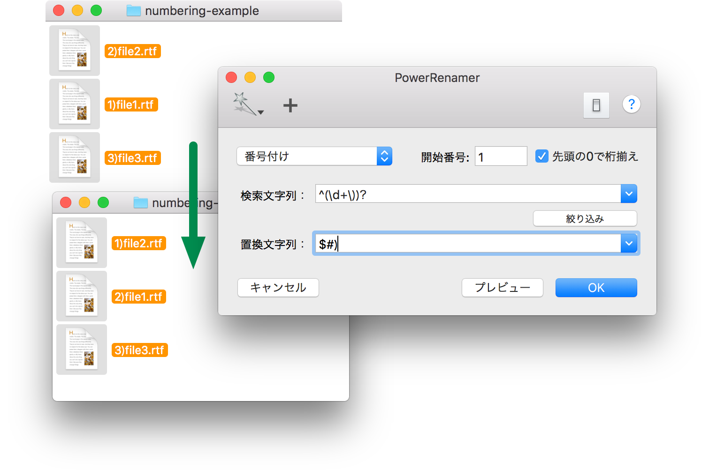
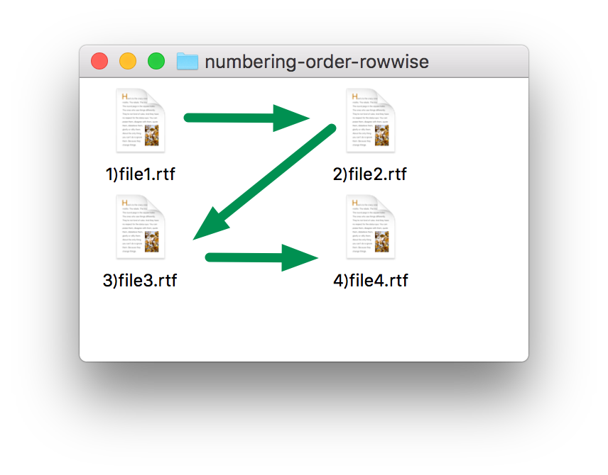

番号付け
番号付けモードを選択すると、ファイル名に連番を挿入することができます。番号の順番は Finder でファイルが並んでいる順番で決定されます。非常に直感的に連番の順番をコントロールできます。詳細は後述します。
番号付けモードは正規表現モードの特殊なモードです。「検索文字列」でファイル名のどこに連番を挿入するかを正規表現で設定し、置換文字列で番号のフォーマット設定します。置換文字列では、「$#」を含める必要があります。「$#」が番号に置き換えられます。$# が番号に置き換えられる以外は、正規表現モードと同じです。

番号付けの順番
番号付けの順番は、選択されている場所の Finder での表示形式で決まります。要するに Finder で見えている順番で番号が振られます。
アイコン表示
ファイルの並び順で番号を振る順番が決定されます。「常に＊＊＊で並び替える。」と設定されている場合は「＊＊＊」（名前や修正日）の順番で番号がけってします。
「グリッドに沿う」もしくは並び替えが行われない場合、ファイルの位置で番号が決定します。この場合、ラベルの位置で、縦方向を基準として順番を決定するか、横方向を基準として順番を決定するかを判断します。
|  |
| 横方向 |
 |
| 縦方向 |
リスト表示/Cover Flow 表示
ソートされている順番で番号を振ります。
カラム表示
名前の昇順で番号を振ります。
プレビュードローワの利用
プレビュードローワに表示されている項目はドラッグ&ドロップで、項目の並べ替えができます。ターゲット項目を取得した後でも、番号付けの順番の微調整を行えます。
サービスメニューやドラッグ&ドロップで、ターゲットとなるファイルを指定した場合は、プレビュードローワで表示されている順番だけで決定されます。Finder での並び順は関係なくなります。